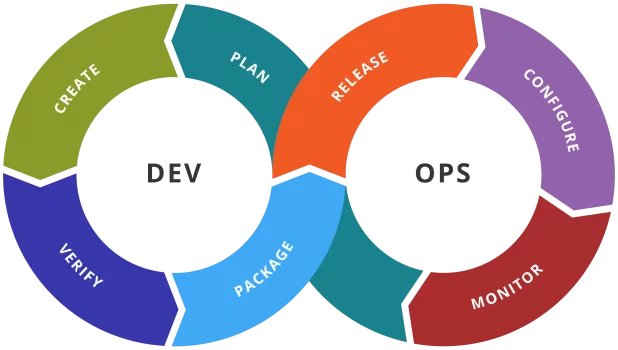
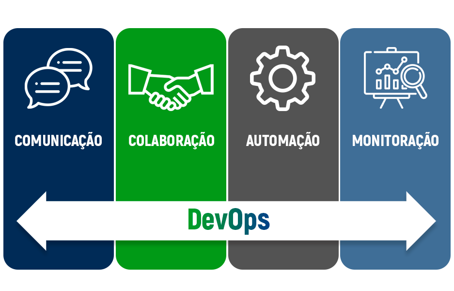
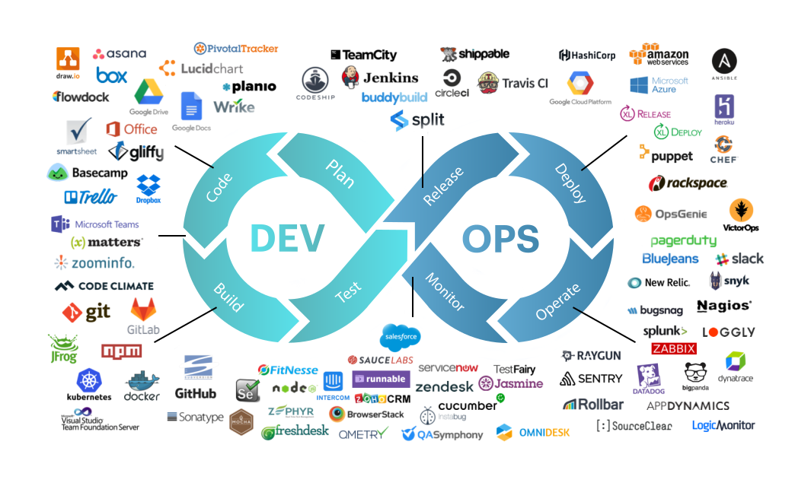

Introdução

DevOps é um tipo de abordagem prática e cultural, onde se integra as equipes de Desenvolvimento (Dev) e a de Operações (Ops). Com o intuito de melhorar a colaboração, automação e entrega contínua de software.
Uma característica marcante do DevOps é entregar valor continuamente ao cliente, enquanto também, unindo pessoas, processos e tecnologias, promovendo uma cultura de colaboração, aprendizado contínuo e automação.
Praticas
Algumas das práticas do DevOps são:
Integração contínua e entrega contínua (CI/CD)
Automatizar o processo de entrega e desenvolvimento do software permitir lançamentos mais rápidos e frequentes.
Colaboração entre equipes
Quebrar a parede invisível entre desenvolvimento e operações, para melhorar a comunicação, assim como a eficiência.
Automação
Implementar ferramentas que automatizam tarefas repetitivas, como testes e implementações.
Monitoramento e Feedback contínuo
Monitorar o desenvolvimento do software e ter constantemente feedback para fazer melhorias contínuas.
Cultura de melhoria contínua
Monitorar o desenvolvimento do software e ter constantemente feedback para fazer melhorias contínuas.
Ferramentas
Planejamento
No DevOps, para o planejamento, é utilizado o Jira, para ajudar a organizar tarefas, priorizar backlogs e facilitar o planejamento de sprints.
Brainstorming
Para brainstorming e colaboração da equipe como um todo, Miro e Mural são ferramentas frequentemente utilizadas.
Compilação e Gerenciamento de Código e Ambientes
Para compilação, Git é utilizado para o controle de versão, enquanto o Github Actions automatiza pipelines de CI/CD. Docker é responsável por criar e gerenciar ambientes de contêineres e Terraform permite gerenciar e infraestrutura de código.
Testes
Para testes, sempre se prioriza a automação, por conta disso, ferramentas como Selenium e JUnit ajudam a executar testes repetitivos enquanto produzem relatórios e gráficos para facilitar a visualização.
Implementação
Para a implementação, Jenkins e CirleCI automatizam deploys, enquanto painéis integrados, como os do BitBucket oferecem visibilidade sobre builds e pull requests.
Operação
Por fim, para operação, ferramentas de monitoramento como Prometheus, ajudam a rastrear o desempenho de aplicativos e servidores. Elastisearch e Kibana são úteis para analisar logs, enquanto Jager facilita o rastreamento distribuído.
Benefícios

Alguns dos benefícios da utilização do DevOps são:
Redução do tempo de entrega
As equipes são capazes de lançarem novas versões com mais frequência e estabilidade maior.
Melhoria na estabilidade e qualidade dos sistemas
Redução nas falhas do sistema e aumento em sua confiabilidade.
Aumento da produtividade
Equipes de DevOps tem menos retrabalho e mais foco na inovação.
Alinhamento das áreas técnicas e de negócios
O DevOps promove uma cultura de colaboração e comunicação contínua entre as equipes.
Escalabilidade Operacional
Ambientes consistentes, fáceis de replicar e seguros.
Exemplos

A seguir tem-se exemplos da utilização do DevOps:
Netflix
A Netflix foi uma das primeiras empresas a adotar o DevOps, utilizando de automação em larga escala, permitindo que a empresa realize lançamentos constantes.
Amazon
A Amazon é outra empresa que adotou com sucesso o DevOps, com isso, passando a utilizar uma série de práticas ágeis e ferramentas de automação para melhorar a eficiência e velocidade de entrega.
Facebook
O Facebook também é conhecido por suas práticas de DevOps, essa empresa utiliza de ferramentas de automação para permitir entregas contínuas e realizar testes para identificar problemas que afetem os usuários.
Conclusão
Por fim, é possível afirmar que o DevOps não é um cargo ou uma profissão, assim como muitas pessoas acreditam ser, mas sim uma prática e cultura que leva a praticidade e eficiência em empresas de software.
Enquanto isso, também une equipes e forma um ambiente de trabalho mais saudável e agradável a todos os envolvidos.